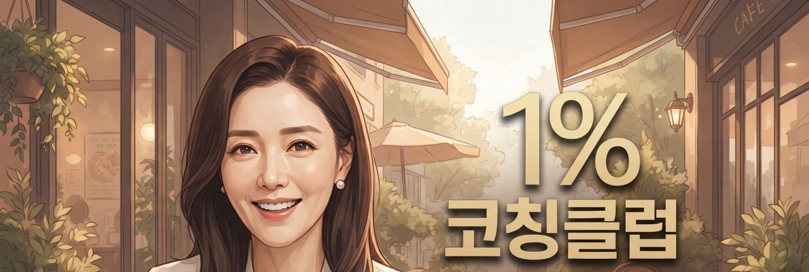

모두에게 좋은 사람이느라 지친 당신,
이제 당신에게 좋은 사람이 될 시간입니다.
안녕하세요, 1%코치예요.
사람에게 지치고, 사랑에 아프고, 회사 화장실에서 몰래 울던 날들. 그 마음 저도 알아요. 여기서는 당신의 이야기를 판단하지 않고 들을게요. 그리고 내일은 조금 덜 아플 수 있는 방법을 함께 찾아요.
오늘의 한마디매일 아침 바뀌는 1%코치의 마음 처방
— 1%코치
마음 테스트3분이면 나를 조금 더 알게 돼요
전체 보기 ›이번 주 고민사연당신의 이야기일지도 몰라요
요즘 많이 본 이야기유튜브 인기 쇼츠
채널 가기 ›🤝
RELATIONSHIP
인간관계 처세술
착한 사람이 손해 보는 게 아니라, 선을 모르는 사람이 손해 봐요. 호구 탈출부터 거절하는 법까지, 실제로 쓸 수 있는 말을 처방해 드릴게요.
 1%코치의 처방
1%코치의 처방💞
LOVE
연애 · 남녀관계
사랑 앞에서는 누구나 서툴러요. 여자친구·남자친구 만드는 법부터 연락 문제, 이별과 재회까지. 마음이 덜 다치는 방향으로 함께 고민해요.
1%코치의 처방💼
WORK LIFE
직장 생존법
회사는 일보다 사람 때문에 힘들어요. 상사, 동료, 사내 정치 속에서 나를 지키며 인정받는 법을 정리했어요.
1%코치의 처방🔮
SELF CHECK
마음 테스트
나도 몰랐던 내 마음의 모양을 들여다보는 시간. 결과를 친구에게 공유해 보세요.
1%코치가 준비했어요